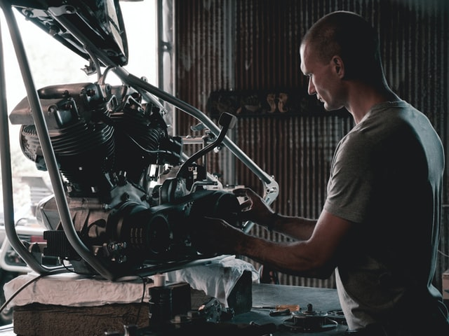

La mecatrónica
y su automatización de procesos
en la vida cotidiana:
autos inteligentes
La mecatrónica: su definición
Para resolver la problemática que vamos a introducir en esta página web, primero se debe entender la área en el que estamos trabajando, y saber cuál es el campo de esta disciplina.
La mecatrónica se define como una rama de la ingeniería que combina otras carreras, como lo son: la electrónica, la mecánica, la informática y la ingeniería de control.
Se considera una rama multidisciplinar por la fusión de estas carreras, con el fin de asegurar un mejor desarrollo de los procesos de diseño y elaboración de productos y máquinas complejas.
No es una cienca ni tecnología en concreto, sino un proceso de integración de varias disciplinas.
La mecatrónica se define como una rama de la ingeniería que combina otras carreras, como lo son: la electrónica, la mecánica, la informática y la ingeniería de control.
Se considera una rama multidisciplinar por la fusión de estas carreras, con el fin de asegurar un mejor desarrollo de los procesos de diseño y elaboración de productos y máquinas complejas.
No es una cienca ni tecnología en concreto, sino un proceso de integración de varias disciplinas.
La Electrónica
La Mecánica
La Informática
La Ingeniería de Control
La Mecatrónica
Etapas de las que se encarga la mecatrónica al momento de crear maquinaria
Boceto
Boceto
Los bocetos mejoran el proceso de diseño de la maquinaria. Además, puede explicar mejor a otros ingenieros las ideas en mente.
Planeación
Planeación
Es importante tener pasos a seguir, dado que reduce la incertidumbre y minimiza el riesgo de fracaso.

Elaboración
Elaboración
Uniendo a personas, materiales y procesos, se intenta elaborar la maquinaria. Tiene la finalidad de resolver una necesidad.
Mantenimiento
Mantenimiento
Un mantenimiento regular es esencial para prolongar la vida de la maquinaria.Pasado histórico y evolución actual de la mecatrónica
Históricamente, la ingeniería mecatrónica se originó en Japón, que es uno de los países de más rápido desarrollo en aplicaciones de robótica y electrónica.
Los japoneses fueron los primeros en comenzar a crear reacciones y crear dispositivos que combinan elementos mecánicos y electrónicos, así nació el concepto de mecatrónica.

Desde su creación y hasta la actualidad, la mecatrónica industrial es una de las más importantes áreas, ya que combina distintas disciplinas para crear la mejor solución en la actividad humana.